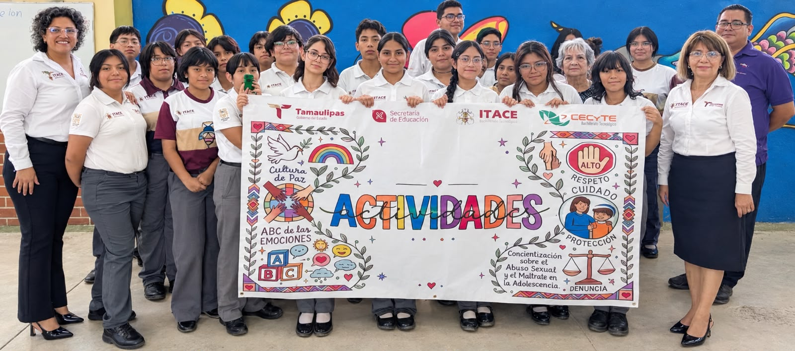
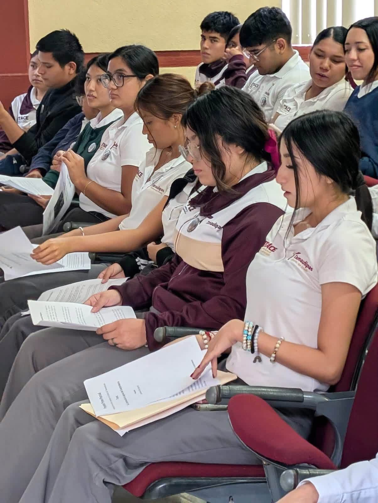

01 / CULTURA
Actividades culturales
Los festivales y las expresiones artísticas permiten compartir talentos, conocer distintas tradiciones y fortalecer la convivencia escolar.
Ser parte del ITACE significa aprender, compartir experiencias, desarrollar habilidades y construir recuerdos que acompañan nuestro crecimiento académico y personal.
Descubre nuestra comunidadLa etapa estudiantil ofrece oportunidades para descubrir intereses, convivir con otras personas y poner en práctica lo aprendido. Estas son algunas áreas que forman parte de la experiencia escolar.
Los festivales y las expresiones artísticas permiten compartir talentos, conocer distintas tradiciones y fortalecer la convivencia escolar.

Compartir las actividades diarias ayuda a desarrollar el respeto, la comunicación, la colaboración y el sentido de pertenencia.

Las ceremonias escolares son espacios para promover el respeto, la responsabilidad y la valoración de nuestros símbolos y tradiciones.

Participar en presentaciones y actividades permite practicar la creatividad, la expresión oral y la confianza al trabajar en equipo.

Las áreas comunes forman parte de la vida cotidiana del plantel y pueden favorecer la convivencia entre estudiantes durante la jornada escolar.

Los espacios de práctica complementan los contenidos de clase y ayudan a relacionar los conocimientos con situaciones y actividades técnicas.
La formación estudiantil no se limita a los conocimientos técnicos. La convivencia diaria también ofrece oportunidades para practicar valores que ayudan a construir una comunidad respetuosa y colaborativa.
Cada experiencia escolar puede convertirse en una oportunidad para aprender, descubrir habilidades y prepararse para nuevos retos académicos y profesionales.